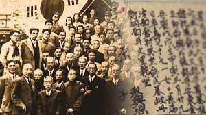

1876년 강화도 조약을 필두로 조선은 일본, 청나라, 미국, 독일, 프랑스, 러시아 등 주변 강대국들로부터 끊임없는 침탈을 겪게 된다. 이 과정에서 수많은 불평등 조약을 체결하여 각종 이권을 빼앗기고, 청나라, 러시아, 일본 등의 한국과 밀접한 열강 국가의 군대들은 조선을 밥 먹듯 드나들게 된다. 특히 일본은 청일전쟁과 러일전쟁을 통해 대한제국에 대한 이권을 독점하게 되고, 급기야 1905년의 을사늑약 등을 거쳐 기어이 1910년에 대한제국의 국권을 완전히 강탈함으로써 한국, 당시 조선은 일본 제국주의의 식민지로 전락하게 된다.

대다수는는 조선의 식민화는 물론 그 후의 악행들 역시도 눈감거나 암묵적으로 동의하였다 시대적 상황은 이토록 암울하였으나, 우리 민족은 자유와 해방, 민족국가의 회복을 갈구하며 여러 분야에서 끊임없는 항일 독립운동을 전개하였다.